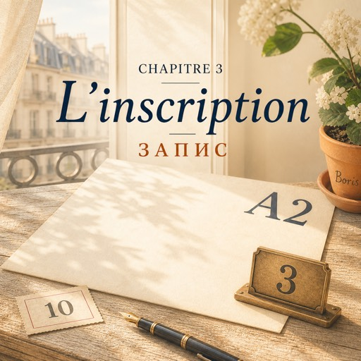

Le lundi 18 août — понеділок, 18 серпня
La mairie du onzième ouvre à neuf heures.
Мерія одинадцятого округу відчиняється о дев'ятій.
À neuf heures dix, il y a déjà neuf personnes.
О дев'ятій десять там уже дев'ятеро людей.
Natalia compte : sept, huit, neuf. Elle est la dixième.
Наталя рахує: сім, вісім, дев'ять. Вона десята.
Devant elle, un jeune homme regarde ses papiers.
Перед нею молодий чоловік розглядає свої папери.
Il les regarde, il les range, il les regarde encore.
Дивиться, ховає, знову дивиться.
Il a chaud. Il tourne la tête.
Йому жарко. Він повертає голову.
— Excusez-moi. Un justificatif de domicile, c'est quoi, exactement ?
— Перепрошую. А що таке довідка про місце проживання, точніше?
Natalia connaît ce mot. Maintenant, elle le connaît très bien.
Наталя знає це слово. Тепер вона знає його дуже добре.
— Une facture. D'électricité, par exemple.
— Рахунок. За електрику, наприклад.
— Ah ! J'ai ça. Je crois. Peut-être.
— А! Це в мене є. Здається. Можливо.
Il sourit. Il s'appelle Rafael. Il est brésilien.
Він усміхається. Його звати Рафаель. Він бразилець.
Il parle vite, il fait beaucoup d'erreurs, et ça ne le dérange pas du tout.
Говорить швидко, робить купу помилок — і його це геть не бентежить.
Guichet numéro trois. Une dame de cinquante ans, avec des lunettes sur la tête.
Віконце номер три. Жінка років п'ятдесяти, окуляри на маківці.
— Bonjour. Vous venez pour les cours de français ?
— Добрий день. Ви на курси французької?
— Oui. Je voudrais m'inscrire.
— Так. Я хотіла б записатися.
— Pièce d'identité, justificatif de domicile, s'il vous plaît.
— Документ, довідку про проживання, будь ласка.
Natalia donne ses papiers. Ses mains sont un peu froides.
Наталя подає папери. Руки в неї трохи холодні.
— C'est cent vingt euros le semestre.
— Сто двадцять євро за семестр.
— Les cours, c'est le mardi et le jeudi, de dix-huit heures trente à vingt heures trente.
— Заняття у вівторок і четвер, з пів на сьому до пів на дев'яту.
— Et il faut passer un test de niveau. Maintenant, si vous voulez.
— І треба скласти тест на рівень. Просто зараз, якщо хочете.
Le test fait deux pages. Vingt minutes.
Тест на дві сторінки. Двадцять хвилин.
Natalia répond à tout, sauf à trois questions.
Наталя відповідає на все, крім трьох питань.
La dame regarde la feuille.
Жінка дивиться на аркуш.
Elle écrit une lettre et un chiffre en haut, à droite.
Пише літеру й цифру вгорі праворуч.
— A2. Salle quatre. Vous commencez le deux septembre.
— A2. Аудиторія чотири. Починаєте другого вересня.
A2. Après quatre ans.
A2. Після чотирьох років.
La dame voit son visage.
Жінка бачить її обличчя.
Elle ferme le dossier et elle dit, plus doucement :
Вона закриває теку й каже вже м'якше:
— Ne soyez pas nerveuse. Moi aussi, j'ai fait ça. Il y a trente ans.
— Не хвилюйтеся. Я теж через це проходила. Тридцять років тому.
Dehors, il fait vingt-huit degrés.
Надворі двадцять вісім градусів.
Natalia s'assoit sur un banc et elle regarde le papier : salle quatre, mardi et jeudi, dix-huit heures trente.
Наталя сідає на лавку й дивиться на папірець: аудиторія чотири, вівторок і четвер, о пів на сьому.
Elle est inscrite.
Вона записана.